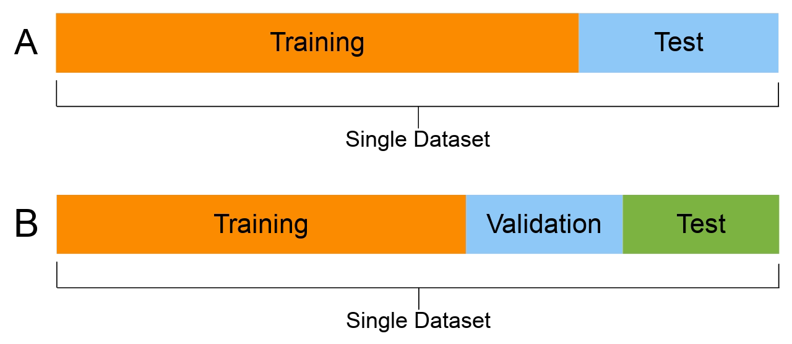

class: center, middle ## Supervised machine learning with some .green[green] algorithms <img src="" width=5%/> .medium[.name[Sothea Has]] .small[`sothea.has@lpsm.paris`] .center[ <img src="figs/sorbonne.png" style="height: 100px;" /> <img src="" style="width: 30px;" /> <img src="figs/lpsm.png" style="height: 150px;" /> <img src="" style="width: 40px;" /> ] --- layout: true class: top --- class: center, middle, inverse # 🤔 What for today? --- # Overview .pull-left-90[ - .stress[Introduction] - What's Machine Learning (ML)? - Traditional Programming (TP) vs Machine Learning (ML) - Branches of ML - General form of data - .stress[Supervised Learning] - Setting & theory - Empirical setting - Some inspired methods - .stress[Tree-based Methods] - Decision trees - Bagging - Random forest - Boosting - .stress[Application] - Handwritten digit recognition (`MNIST`) ] --- class: center, middle, inverse # 🤓 Introduction --- # What is ML? .pull-left-70[ - An informal defintion by .stress[Arthur Samuel (1959)]: .center[<br/>"The field of study that gives computers<br/> the ability to learn without being<br/> explicitly programmed."] ] <br/> .pull-right-30[ <img src="figs/samuel.PNG" style="height:190px;" /> ] --- # What is ML? .pull-left-70[ - An informal defintion by .stress[Arthur Samuel (1959)]: .center[<br/>"The field of study that gives computers<br/> the ability to learn without being<br/> explicitly programmed."] ] <br/> .pull-right-30[ <img src="figs/samuel.PNG" style="height:190px;" /> ] .pull-left-80[ - A more formal defintion by .stress[Tom M. Mitchell (1997)]: ] .pull-right-80[ .center["A computer program is said to learn from experience $E$ with respect to some class of tasks $T$ and<br/> performance measure $P$, if its<br/> performance at tasks in $T$, as<br/> measured by $P$, improves<br/> with experience $E$"] ] .pull-right-20[ <img src="figs/mitchell.PNG" style="height:190px;" /> ] --- # TP vs ML - Traditional Programming: <svg width="200" height="100"> <rect x="50" y="20" rx="20" ry="20" width="130" height="50" style="fill:white;stroke: #0e87d3;stroke-width:5;opacity:0.8" /> <text x="80" y="55" font-family= 'Yanone Kaffeesatz'; font-size="35" fill="#ef831f"> Human</text> <text x="105" y="100" font-family= sans-serif; font-size="45" fill="#ef831f">🠣</text> </svg> <br/> <svg width="200" height="100"> <text x="110.5" y="19" font-family= sans-serif; font-size="40" fill="#ef831f">Ι</text> <rect x="55" y="20" rx="20" ry="20" width="130" height="50" style="fill:white;stroke: #0e87d3;stroke-width:5;opacity:0.8" /> <text x="80" y="55" font-family= 'Yanone Kaffeesatz'; font-size="35" fill="#ef831f"> Program</text> <text x="105" y="100" font-family= sans-serif; font-size="45" fill="#ef831f">🠣</text> </svg> <br/> <svg width="215" height="100"> <text x="110.5" y="19" font-family= sans-serif; font-size="40" fill="#ef831f">Ι</text> <rect x="55" y="20" rx="20" ry="20" width="155" height="50" style="fill:white;stroke: #0e87d3;stroke-width:5;opacity:0.8" /> <text x="80" y="55" font-family= 'Yanone Kaffeesatz'; font-size="35" fill="#ef831f"> Evaluation</text> <text x="105" y="100" font-family= sans-serif; font-size="45" fill="#ef831f">🠣</text> </svg> <svg width="170" height="100"> <rect x="50" y="20" rx="20" ry="20" width="100" height="50" style="fill:white;stroke: #0e87d3;stroke-width:5;opacity:0.8" /> <text x="3" y="55" font-family= 'Yanone Kaffeesatz'; font-size="35" fill="#ef831f">🠤 Input</text> </svg> <br/> <svg width="200" height="100"> <text x="110.5" y="19" font-family= sans-serif; font-size="40" fill="#ef831f">Ι</text> <rect x="55" y="20" rx="20" ry="20" width="120" height="50" style="fill:white;stroke: #0e87d3;stroke-width:5;opacity:0.8" /> <text x="80" y="55" font-family= 'Yanone Kaffeesatz'; font-size="35" fill="#ef831f"> Output</text> </svg> --- # TP vs ML - Traditional Programming: .pull-right[- Machine Learning] <svg width="200" height="100"> <rect x="50" y="20" rx="20" ry="20" width="130" height="50" style="fill:white;stroke: #0e87d3;stroke-width:5;opacity:0.8" /> <text x="80" y="55" font-family= 'Yanone Kaffeesatz'; font-size="35" fill="#ef831f"> Human</text> <text x="105" y="100" font-family= sans-serif; font-size="45" fill="#ef831f">🠣</text> </svg> .pull-right[<svg width="200" height="100"> <rect x="50" y="20" rx="20" ry="20" width="130" height="50" style="fill:white;stroke: #0e87d3;stroke-width:5;opacity:0.8" /> <text x="70" y="55" font-family= 'Yanone Kaffeesatz'; font-size="35" fill="#ef831f"> Learning</text> <text x="105" y="100" font-family= sans-serif; font-size="45" fill="#ef831f">🠣</text> </svg> <svg width="170" height="100"> <rect x="35" y="20" rx="20" ry="20" width="130" height="50" style="fill:white;stroke: #0e87d3;stroke-width:5;opacity:0.8" /> <text x="-3" y="55" font-family= 'Yanone Kaffeesatz'; font-size="35" fill="#ef831f">🠤 Train Data</text> </svg> ] <br/> <svg width="200" height="100"> <text x="110.5" y="19" font-family= sans-serif; font-size="40" fill="#ef831f">Ι</text> <rect x="55" y="20" rx="20" ry="20" width="130" height="50" style="fill:white;stroke: #0e87d3;stroke-width:5;opacity:0.8" /> <text x="80" y="55" font-family= 'Yanone Kaffeesatz'; font-size="35" fill="#ef831f"> Program</text> <text x="105" y="100" font-family= sans-serif; font-size="45" fill="#ef831f">🠣</text> </svg> .pull-right[<svg width="200" height="100"> <text x="110.5" y="19" font-family= sans-serif; font-size="40" fill="#ef831f">Ι</text> <rect x="55" y="20" rx="20" ry="20" width="130" height="50" style="fill:white;stroke: #0e87d3;stroke-width:5;opacity:0.8" /> <text x="80" y="55" font-family= 'Yanone Kaffeesatz'; font-size="35" fill="#ef831f"> Program</text> <text x="105" y="100" font-family= sans-serif; font-size="45" fill="#ef831f">🠣</text> </svg> ] <br/> <svg width="215" height="100"> <text x="110.5" y="19" font-family= sans-serif; font-size="40" fill="#ef831f">Ι</text> <rect x="55" y="20" rx="20" ry="20" width="155" height="50" style="fill:white;stroke: #0e87d3;stroke-width:5;opacity:0.8" /> <text x="80" y="55" font-family= 'Yanone Kaffeesatz'; font-size="35" fill="#ef831f"> Evaluation</text> <text x="105" y="100" font-family= sans-serif; font-size="45" fill="#ef831f">🠣</text> </svg> .pull-right[<svg width="215" height="100"> <text x="110.5" y="19" font-family= sans-serif; font-size="40" fill="#ef831f">Ι</text> <rect x="55" y="20" rx="20" ry="20" width="155" height="50" style="fill:white;stroke: #0e87d3;stroke-width:5;opacity:0.8" /> <text x="80" y="55" font-family= 'Yanone Kaffeesatz'; font-size="35" fill="#ef831f"> Evaluation</text> <text x="105" y="100" font-family= sans-serif; font-size="45" fill="#ef831f">🠣</text> </svg> <svg width="170" height="100"> <rect x="50" y="20" rx="20" ry="20" width="100" height="50" style="fill:white;stroke: #0e87d3;stroke-width:5;opacity:0.8" /> <text x="3" y="55" font-family= 'Yanone Kaffeesatz'; font-size="35" fill="#ef831f">🠤 Input</text> </svg> <svg width="180" height="100"> <text x="110.5" y="19" font-family= sans-serif; font-size="40" fill="#ef831f">Ι</text> <rect x="55" y="20" rx="20" ry="20" width="120" height="50" style="fill:white;stroke: #0e87d3;stroke-width:5;opacity:0.8" /> <text x="80" y="55" font-family= 'Yanone Kaffeesatz'; font-size="35" fill="#ef831f"> Output</text> </svg> ] <svg width="170" height="100"> <rect x="50" y="20" rx="20" ry="20" width="100" height="50" style="fill:white;stroke: #0e87d3;stroke-width:5;opacity:0.8" /> <text x="3" y="55" font-family= 'Yanone Kaffeesatz'; font-size="35" fill="#ef831f">🠤 Input</text> </svg> <br/> <svg width="200" height="100"> <text x="110.5" y="19" font-family= sans-serif; font-size="40" fill="#ef831f">Ι</text> <rect x="55" y="20" rx="20" ry="20" width="120" height="50" style="fill:white;stroke: #0e87d3;stroke-width:5;opacity:0.8" /> <text x="80" y="55" font-family= 'Yanone Kaffeesatz'; font-size="35" fill="#ef831f"> Output</text> </svg> --- # Branches of ML <div class="center"><img src="figs/ML_branches.png" style="height:550px;" /></div> --- # Data - It can be: images, videos, voices, texts, time series, survey, ... - Type: numerical, categorical,... - General form: <table class="container"> <thead> <tr> <th>Id</th> <th>$X_1$</th> <th>$X_1$</th> <th>$\dots$</th> <th>$X_m$</th> </tr> </thead> <tbody> <tr> <td>${\bf x}_1$</td> <td>$x_1^1$</td> <td>$x_1^2$</td> <td>$\dots$</td> <td>$x_1^m$</td> </tr> <tr> <td>${\bf x}_2$</td> <td>$x_2^1$</td> <td>$x_2^2$</td> <td>$\dots$</td> <td>$x_2^m$</td> </tr> <tr> <td>$\dots$</td> <td>$\dots$</td> <td>$\dots$</td> <td>$\dots$</td> <td>$\dots$</td> </tr> <tr> <td>${\bf x}_n$</td> <td>$x_n^1$</td> <td>$x_n^2$</td> <td>$\dots$</td> <td>$x_n^m$</td> </tr> </tbody> </table> - Individual: ${\bf x}_i=(x_i^1,...,x_i^m)^T$, for $i=1,...,n$. - Variable: $X_j=(x_1^j,...,x_n^j)$, for $j=1,...,m$. --- ## First example - .stress[Iris]: `Hello world` data of .stress1[`ML`] ($150$ rows & $5$ columns). <table class="container" style="text-align: center; width: 95%;"> <thead> <tr> <th>Sepal Lth</th> <th>Sepal Wth</th> <th>Petal Lth</th> <th>Petal Wth</th> <th>Species</th> </tr> </thead> <tbody> <tr> <td>$5.1$</td> <td>$3.5$</td> <td>$1.4$</td> <td>$0.2$</td> <td>setosa</td> </tr> <tr> <td>$6.9$</td> <td>$3.1$</td> <td>$4.9$</td> <td>$1.5$</td> <td>versicolor</td> </tr> <tr> <td>$6.9$</td> <td>$3.1$</td> <td>$5.4$</td> <td>$2.1$</td> <td>virginica</td> </tr> <tr> <td>$\dots$</td> <td>$\dots$</td> <td>$\dots$</td> <td>$\dots$</td> <td>$\dots$</td> </tr> <tr> <td>$5.6$</td> <td>$3$</td> <td>$4.5$</td> <td>$1.5$</td> <td>versicolor</td> </tr> </tbody> </table> - Flower ${\bf x_1}=(5.1, 3.5, 1.4, 0.2,\texttt{setosa})$. - Variable .small[${\bf Species}=(\texttt{setosa},\texttt{versicolor},\texttt{virginica},\texttt{versicolor})$]. --- ## Second example - .stress[Mnist]: contains totally $70\ 000$ of handwritten digits. <table class="container" style="text-align: center; width: 95%;"> <thead> <tr> <th>Label</th> <th>$X_1$</th> <th>$X_2$</th> <th>$X_3$</th> <th>$\dots$</th> <th>$X_{784}$</th> </tr> </thead> <tbody> <tr> <td>$5$</td> <td>$0.0$</td> <td>$0.0$</td> <td>$0.0$</td> <td>$\dots$</td> <td>$0.0$</td> </tr> <tr> <td>$\dots$</td> <td>$\dots$</td> <td>$\dots$</td> <td>$\dots$</td> <td>$\dots$</td> <td>$\dots$</td> </tr> <tr> <td>$8$</td> <td>$0.0$</td> <td>$0.0$</td> <td>$0.0$</td> <td>$\dots$</td> <td>$0.0$</td> </tr> </tbody> </table> .pull-left-20[] .pull-right[<video width="400px" height="190px" controls autoplay> <source src="figs/digit.mp4" type="video/mp4"> </video>] --- class: center, middle, inverse # Supervised Learning <br/> ## (🍿.stress[Movie time]🍿) --- ## .stress[Some books you might want to download and never read 😎] .pull-left-50[ <img src="figs/distFree.jpg" style="height:150px; width: 100px;" /> .pull-right-40[ <img src="figs/patternRecg.jpg" style="height:150px; width: 100px;" />] <br> .name[📖 <a href="https://link.springer.com/book/10.1007/978-1-4612-0711-5" target="_blank">Györfi et al. (2002)</a> .pull-right-40[.name[📖 <a href="chrome-extension://oemmndcbldboiebfnladdacbdfmadadm/http://users.isr.ist.utl.pt/~wurmd/Livros/school/Bishop%20-%20Pattern%20Recognition%20And%20Machine%20Learning%20-%20Springer%20%202006.pdf" target="_blank">Bishop (2006)</a>]]] <br> <br> <br> <br> <img src="figs/ELSL.jpg" style="height:150px; width: 100px;" /> .pull-right-40[ ] .pull-right-40[.name[📖 <a href="https://www.statlearning.com/" target="_blank">James et al. (2021)</a>]] <br> .name[📖 <a href="chrome-extension://oemmndcbldboiebfnladdacbdfmadadm/https://hastie.su.domains/Papers/ESLII.pdf" target="_blank">Hastie et al. (2008)</a>] ] --- # Setting ## .stress[Notation] - $(X,Y)\in{\cal X}\times\mathcal{Y}$ : input-output couple & spaces. - Very often, ${\cal X}=\mathbb{R}^d$, and - ${\cal Y}=\mathbb{R}$: .stress1[regression]. - ${\cal Y}$ is finite ($|{\cal Y}|$ not big): .stress1[classification]. --- # Setting ## .stress[Notation] - $(X,Y)\in{\cal X}\times\mathcal{Y}$ : input-output couple & spaces. - Very often, ${\cal X}=\mathbb{R}^d$, and - ${\cal Y}=\mathbb{R}$: .stress1[regression]. - ${\cal Y}$ is finite ($|{\cal Y}|$ not big): .stress1[classification]. ## .stress[Goal] - Predict $Y$ using $X$ i.e., .stress1[.small[$\text{find }f:{\cal X}\to {\cal Y}\text{ s.t }f(X)\approx Y\text{ (in some sense).}$]] --- # Setting ## .stress[Notation] - $(X,Y)\in{\cal X}\times\mathcal{Y}$ : input-output couple & spaces. - Very often, ${\cal X}=\mathbb{R}^d$, and - ${\cal Y}=\mathbb{R}$: .stress1[regression]. - ${\cal Y}$ is finite ($|{\cal Y}|$ not big): .stress1[classification]. ## .stress[Goal] - Predict $Y$ using $X$ i.e., .stress1[.small[$\text{find }f:{\cal X}\to {\cal Y}\text{ s.t }f(X)\approx Y\text{ (in some sense).}$]] .pull-left[ .hide[Remark] ] <!-- .pull-right-40[] --> --- # Setting ## .stress[Notation] - $(X,Y)\in{\cal X}\times\mathcal{Y}$ : input-output couple & spaces. - Very often, ${\cal X}=\mathbb{R}^d$, and - ${\cal Y}=\mathbb{R}$: .stress1[regression]. - ${\cal Y}$ is finite ($|{\cal Y}|$ not big): .stress1[classification]. ## .stress[Goal] - Predict $Y$ using $X$ i.e., .stress1[.small[$\text{find }f:{\cal X}\to {\cal Y}\text{ s.t }f(X)\approx Y\text{ (in some sense).}$]] .pull-left[ ## .stress[Remark] - $f$ is linked to .stress1[models]. - .stress1[$f(X)\approx Y$] is linked to .stress1[losses] or .stress1[distances]. ] <!-- .pull-right-40[] --> --- # Setting ## .stress[Notation] - $(X,Y)\in{\cal X}\times\mathcal{Y}$ : input-output couple & spaces. - Very often, ${\cal X}=\mathbb{R}^d$, and - ${\cal Y}=\mathbb{R}$: .stress1[regression]. - ${\cal Y}$ is finite ($|{\cal Y}|$ not big): .stress1[classification]. ## .stress[Goal] - Predict $Y$ using $X$ i.e., .stress1[.small[$\text{find }f:{\cal X}\to {\cal Y}\text{ s.t }f(X)\approx Y\text{ (in some sense).}$]] .pull-left[ ## .stress[Remark] - $f$ is linked to .stress1[models]. - .stress1[$f(X)\approx Y$] is linked to .stress1[losses] or .stress1[distances]. - And many more later, .stress[I promise!] ] <!-- .pull-right-40[] --> --- # Statistical Decision Theory ## .stress[Assumption] $(X,Y)$ is assumed to be $\cal X\times Y$-valued .stress1[random variable]. --- # Statistical Decision Theory ## .stress[Assumption] $(X,Y)$ is assumed to be $\cal X\times Y$-valued .stress1[random variable]. ## .stress[Loss functions] For any $y_1,y_2\in{\cal Y}$, and $p,q\in[0,1]^M$, $\sum_ip_i=\sum_iq_i=1$, - .stress1[Regression]: - Quadratic or $L_2$ loss: .stress1[$\ell(y_1,y_2)=(y_1-y_2)^2$]. - Absolute or $L_1$ loss: $\ell(y_1,y_2)=|y_1-y_2|$. --- # Statistical Decision Theory ## .stress[Assumption] $(X,Y)$ is assumed to be $\cal X\times Y$-valued .stress1[random variable]. ## .stress[Loss functions] For any $y_1,y_2\in{\cal Y}$, and $p,q\in[0,1]^M$, $\sum_ip_i=\sum_iq_i=1$, - .stress1[Regression]: - Quadratic or $L_2$ loss: .stress1[$\ell(y_1,y_2)=(y_1-y_2)^2$]. - Absolute or $L_1$ loss: $\ell(y_1,y_2)=|y_1-y_2|$. - .stress1[Classification]: - 0/1 loss: .stress1[$\ell(y_1, y_2)={\bf 1}(y_1\neq y_2)$]. - Kullback-leibler divergence: $\ell(p,q)=\sum_{m=1}^Mp_m\log(p_m/q_m)$. --- # Statistical Decision Theory ## .stress[Assumption] $(X,Y)$ is assumed to be $\cal X\times Y$-valued .stress1[random variable]. ## .stress[Loss functions] For any $y_1,y_2\in{\cal Y}$, and $p,q\in[0,1]^M$, $\sum_ip_i=\sum_iq_i=1$, - .stress1[Regression]: - Quadratic or $L_2$ loss: .stress1[$\ell(y_1,y_2)=(y_1-y_2)^2$]. - Absolute or $L_1$ loss: $\ell(y_1,y_2)=|y_1-y_2|$. - .stress1[Classification]: - 0/1 loss: .stress1[$\ell(y_1, y_2)={\bf 1}(y_1\neq y_2)$]. - Kullback-leibler divergence: $\ell(p,q)=\sum_{m=1}^Mp_m\log(p_m/q_m)$. ##.stress[Risk] .pull-right-80[.small[${\cal R(f)}=\mathbb{E}[\ell(f(X),Y)]\ \ \ \ \ (1)$]] --- # Statistical Decision Theory ## .stress[Goal] .stress1[$\text{Searching for }f^{\star}\ \text{s.t }{\cal R}(f^{\star})=\text{inf}_{f\in{\cal H}}{\cal R}(f)$] --- # Statistical Decision Theory ## .stress[Goal] .stress1[$\text{Searching for }f^{\star}\ \text{s.t }{\cal R}(f^{\star})=\text{inf}_{f\in{\cal H}}{\cal R}(f)$] ## .stress[Some results] Let $\eta(x)=\mathbb{E}(Y| X = x)$ be the .stress[regression function]. - .stress1[Regression with ${\cal R}(f)=\mathbb{E}[(f(X)-Y)^2]$] - ${\cal R}(f)=\mathbb{E}[(f(X)-\eta(X))^2]+\mathbb{E}[(Y-\eta(X))^2]$. --- # Statistical Decision Theory ## .stress[Goal] .stress1[$\text{Searching for }f^{\star}\ \text{s.t }{\cal R}(f^{\star})=\text{inf}_{f\in{\cal H}}{\cal R}(f)$] ## .stress[Some results] Let $\eta(x)=\mathbb{E}(Y| X = x)$ be the .stress[regression function]. - .stress1[Regression with ${\cal R}(f)=\mathbb{E}[(f(X)-Y)^2]$] - ${\cal R}(f)=\mathbb{E}[(f(X)-\eta(X))^2]+\mathbb{E}[(Y-\eta(X))^2]$. - $f^{\star}=\eta$ (Bayesian estimator). --- # Statistical Decision Theory ## .stress[Goal] .stress1[$\text{Searching for }f^{\star}\ \text{s.t }{\cal R}(f^{\star})=\text{inf}_{f\in{\cal H}}{\cal R}(f)$] ## .stress[Some results] Let $\eta(x)=\mathbb{E}(Y| X = x)$ be the .stress[regression function]. - .stress1[Regression with ${\cal R}(f)=\mathbb{E}[(f(X)-Y)^2]$] - ${\cal R}(f)=\mathbb{E}[(f(X)-\eta(X))^2]+\mathbb{E}[(Y-\eta(X))^2]$. - $f^{\star}=\eta$ (Bayesian estimator). - ${\cal R}(\eta)=\mathbb{E}[(Y-\eta(X))^2]$ (Bayesian risk). --- # Statistical Decision Theory ## .stress[Goal] .stress1[$\text{Searching for }f^{\star}\ \text{s.t }{\cal R}(f^{\star})=\text{inf}_{f\in{\cal H}}{\cal R}(f)$] ## .stress[Some results] Let $\eta(x)=\mathbb{E}(Y| X = x)$ be the .stress[regression function]. - .stress1[Regression with ${\cal R}(f)=\mathbb{E}[(f(X)-Y)^2]$] - ${\cal R}(f)=\mathbb{E}[(f(X)-\eta(X))^2]+\mathbb{E}[(Y-\eta(X))^2]$. - $f^{\star}=\eta$ (Bayesian estimator). - ${\cal R}(\eta)=\mathbb{E}[(Y-\eta(X))^2]$ (Bayesian risk). - .stress1[$M$-class classification with ${\cal R}(f)=\mathbb{E}[{\bf 1}(f(X)\neq Y)]$] - $\displaystyle f^{\star}(x)=\text{arg}\max_{1\leq m\leq M}\mathbb{P}(Y=m|X=x)$. --- # Empirical Setting (real game!) ## .stress[Setting] - Observe ${\cal D}_n=\\{({\bf x}_1,y_1), ({\bf x}_2,y_2),..., ({\bf x}_n,y_n)\\}$, where $$({\bf x}_i,y_i)\overset{iid}{\sim} (X,Y), \forall i\in\\{1,2,...,n\\}.$$ - The problem is reduced to: - Empirical risk: $\displaystyle {\cal R}_n(f)=\frac{1}{n}\sum_1^n\ell(f({\bf x}_i),y_i)$ .stress1[$(2)$]. - Search for $f_n^{\star}$ minimizing ${\cal R}_n(f)$. ## .stress[To make it works!] - .stress1[Empirical risk minimization]: ${\cal R}_n(f_n^*)\to {\cal R}(f^{\star})$ as $n\to+\infty$? - Minimizing .stress1[$(2)$] often leads to .stress1[overfitting]!!! - We want $f_n^*$ that works well on new observations ($\neq$ distribution?). --- # Some inspired methods ## .stress[$k$-nearest neighbor ($k$NN)] - $d$ be a distance (Euclidean). - $x\in\mathbb{R}^d$, let $(X^x(i),Y^x(i))$ be the couple of $i$th NN of $x$ i.e., $$ d(x, X^x(1)) \leq d(x, X^x(2)) \leq ...\leq d(x, X^x(n)).$$ - .stress1[Regression]: $$\hat{y}=\frac{\sum_{i=1}^kY(i)}{k}$$ - .stress1[Classification]: let $S_m^x=\\{ i:Y^x(i)=m,1\leq i\leq k\\}$, $$\hat{y}=\text{arg}\max_{1\leq m\leq M}\frac{|S_m^x|}{k}$$ --- # Some inspired methods ## .stress[$k$-nearest neighbor ($k$NN)] .pull-left-40[.small[<table class="container" style="text-align: center; width: 95%;"> <thead> <tr> <th>$X_1$</th> <th>$X_2$</th> <th>$Y$</th> </tr> </thead> <tbody> <tr> <td>$3.3$</td> <td>$0.3$</td> <td></td> </tr> <tr> <td>$1.6$</td> <td>$2.5$</td> <td></td> </tr> <tr> <td>$1.9$</td> <td>$0.8$</td> <td></td> </tr> <tr> <td>$0.5$</td> <td>$5.1$</td> <td></td> </tr> <tr> <td>$...$</td> <td>$...$</td> <td>$...$</td> </tr> <tr> <td>$2.2$</td> <td>$2.8$</td> <td></td> </tr> <tr> <td>$2$</td> <td>$2$</td> <td><img src="figs/red.png" style="height:20px; width: 20px;" /></td> </tr> </tbody> </table>] <br/> - .stress1[classification]: - .stress[$3$NN]: .red[$\bullet$] $=$ .purple[$\bullet$]. - .stress[$6$NN]: .red[$\bullet$] $=$ .yellow[$\bullet$]. ] .pull-right-60[<img src="figs/knn1.png" style="height:300px; width: 430px;" /> - .stress1[Regression]: - .stress[$3$NN]: .red[$\bullet$] $=\frac{2+2.1+1.7}{3}\approx 1.93$. - .stress[$6$NN]: .red[$\bullet$] $=\frac{2+2.1+1.7+0.8+1+1.5}{6}\approx 1.52$.] --- # Some inspired methods ## .stress[Kernel smoothing method] .pull-right-60[<video width="500px" height="250px" controls autoplay> <source src="figs/kernel.mp4" type="video/mp4"> </video>] - $K:\mathbb{R}^d\to\mathbb{R}_+$: $$ \hat{y} =\sum_{i=1}^nW_i(x)Y_i,$$ where, for any $h>0$: $$W_i(x)=\frac{K((x-X_i)/h)}{\sum_j K((x-X_j)/h)}, i=1,2,...,n.$$ - .stress[Remark]: $$\eta(x)=\mathbb{E}(Y|X=x)=\sum_i y_i\mathbb{P}(Y=y_i|X=x)$$. --- # Key parameter ## .stress[Recall] - We want $f_n^*$ minimizing some risk ${\cal R}_n$. - In general, $f_n^*$ depends on some key parameters $\beta\in\Theta$. - Example: - $k$NN: $k$ is the key. - kernel smoothing method: $h$ is the key. - linear regression: $Y=\beta_0+\sum_1^m\beta_jX_j$, where $\beta\in\mathbb{R}^{m+1}$ is the key. - Neural networks: all weights & neuraons are the key parameters. - ... ## .stress[Remark] - Learning $f_n^*\Leftrightarrow$ learning $\beta\in\Theta$, minimizing the risk ${\cal R}_n$. - From now, we use $f_\beta$ instead of $f_n^*$. - Of course, $\beta$ depends on ${\cal D}_n$. --- # Overfitting - Minimizing .stress1[$(2)$] $\Rightarrow$ too flexible $f_n^{\star}$ (high variance). .pull-left-20[<img src="figs/overfit2.jpg" style="height:300px; width: 550px;" />] .pull-right-30[ <img src="figs/overfit1.jpg" style="height:200px; width: 200px;"/> .stress[Bob can't sleep!]] .pull-left-80[ - Morality: .stress[Don't try to fit to much to the training data!] - Solution: .stress[Sacrifice accuracy on the training data]. - Cross-validation - Regularization - Boostrap ... ] --- # Model validation technique ## .stress[Data splitting] - ${\cal D}_n={\cal D}_t\cup {\cal D}_v$: around $75\%$-$25\%$ random partions. - We look for $f_{\hat{\beta}}$ built on ${\cal D}_t$ s.t: $$ \hat{\beta} = \text{arg}\min_{b} {\cal R}_v(f_b), $$ where in this case, ${\cal R}_v$ is computed based on ${\cal D}_v$. <br/> <br/> .pull-right[ ] <br> - .stress[What if we are unlucky?] --- # Model validation technique ## .stress[$K$-fold cross-validation] - ${\cal D}_n=\cup_1^K {\cal F}_k$: $K$-fold partition. - We look for $f_\hat{\beta}$ s.t: $$ \hat{\beta} = \text{arg}\min_b \frac{1}{K}\sum_1^K{\cal R}_k(f_b)$$ where for any parameter $b$, .pull-right[ ].pull-left-50[ `for k = 1, 2, ..., K:` $f_b$ `is built using` ${\cal D}_n\setminus{\cal F}_k$ ${\cal R}_k$ `is computed using` ${\cal F}_k$. ] --- class: center, middle, inverse # 🌲 .green[Tree]-based algorithms --- # Decision .green[trees] 🌵 .pull-right[ ] - Why a tree? - simple - interpretable - sometimes, performs really well - ... --- # Decision .green[trees] 🌵 .pull-right[ <br> ] - Why a tree? - simple - interpretable - sometimes, performs really well - ... - How? - grow a tree $\Leftrightarrow$ partition. --- # Decision .green[trees] 🌵 .pull-right[ <br> ] - Why a tree? - simple - interpretable - sometimes, performs really well - ... - How? - grow a tree $\Leftrightarrow$ partition. - partitioning $\Rightarrow$ blocks. - block $\Rightarrow$ neighbors $\Rightarrow$ prediction - ... --- # Decision .green[trees] 🌵 .pull-right[ <br> ] - Why a tree? - simple - interpretable - sometimes, performs really well - ... - How? - grow a tree $\Leftrightarrow$ partition. - partitioning $\Rightarrow$ blocks. - block $\Rightarrow$ neighbors $\Rightarrow$ prediction - ... - Algorithm: - .stress[ID3] ([Ross Quinlan](https://en.wikipedia.org/wiki/Ross_Quinlan)) - .stress[C4.5] (Successor of ID3) - .stress[CART] (Classification And Regression Tree) - ... --- # Decision .green[trees] 🌵 ## .stress[Classification And Regression .green[Trees]] ([🎥](https://www.youtube.com/watch?v=ZVR2Way4nwQ&ab_channel=NormalizedNerd)) - Algorithm: - start from the root ${\cal D}_n$ - recursively split those regions by $X_j=a$ (*variable* $X_j$ at *value* $a$) - split regions to be as .stress[**homogeneous**] or .stress[**pure**] as possible --- # Decision .green[trees] 🌵 ## .stress[Classification And Regression .green[Trees]] ([🎥](https://www.youtube.com/watch?v=ZVR2Way4nwQ&ab_channel=NormalizedNerd)) - Algorithm: - start from the root ${\cal D}_n$ - recursively split those regions by $X_j=a$ (*variable* $X_j$ at *value* $a$) - split regions to be as .stress[**homogeneous**] or .stress[**pure**] as possible - What does it mean to be .stress[**pure**]? --- # Decision .green[trees] 🌵 ## .stress[Classification And Regression .green[Trees]] ([🎥](https://www.youtube.com/watch?v=ZVR2Way4nwQ&ab_channel=NormalizedNerd)) - Impurity measure (classification): $\forall p=(p_1, ..., p_M):\sum p_k=1$ - Gini index (Gn): $\sum_{k=1}^Mp_k(1-p_k)$ - Entropy (En): $-\sum_{k=1}^Mp_k\log(p_k)$ - Misclassification error (Mc): $1-p_{k^*}$ (prob. of minority classes). .center[] --- # Decision .green[trees] 🌵 ## .stress[Classification And Regression .green[Trees]] ([🎥](https://www.youtube.com/watch?v=ZVR2Way4nwQ&ab_channel=NormalizedNerd)) - Impurity measure (classification): $\forall p=(p_1, ..., p_M):\sum p_k=1$ - Gini index (Gn): $\sum_{k=1}^Mp_k(1-p_k)$ - Entropy (En): $-\sum_{k=1}^Mp_k\log(p_k)$ - Misclassification error (Mc): $1-p_{k^*}$ (prob. of minority classes). .center[] - Key idea: more .stress[homogeneous] region, .stress[smaller] impurity measure. --- # Decision .green[trees] 🌵 ## .stress[Classification And Regression .green[Trees]] ([🎥](https://www.youtube.com/watch?v=ZVR2Way4nwQ&ab_channel=NormalizedNerd)) - Impurity measure (classification): $\forall p=(p_1, ..., p_M):\sum p_k=1$ - Gini index (Gn): $\sum_{k=1}^Mp_k(1-p_k)$ - Entropy (En): $-\sum_{k=1}^Mp_k\log(p_k)$ - Misclassification error (Mc): $1-p_{k^*}$ (prob. of minority classes). .pull-right[] - Ex: $p_0=$(.stress[0.6], .green[**0.4**]$)$, at $X_1=-2$: --- # Decision .green[trees] 🌵 ## .stress[Classification And Regression .green[Trees]] ([🎥](https://www.youtube.com/watch?v=ZVR2Way4nwQ&ab_channel=NormalizedNerd)) - Impurity measure (classification): $\forall p=(p_1, ..., p_M):\sum p_k=1$ - Gini index (Gn): $\sum_{k=1}^Mp_k(1-p_k)$ - Entropy (En): $-\sum_{k=1}^Mp_k\log(p_k)$ - Misclassification error (Mc): $1-p_{k^*}$ (prob. of minority classes). .pull-right[] - Ex: $p_0=$(.stress[0.6], .green[**0.4**]$)$, at $X_1=-2$: - .small[$\text{En}_1=-($.stress[0.8]$\times\log($.stress[0.8]$)+$.green[**0.2**]$\times\log($.green[**0.2**]$))$] .small[$\approx 0.5$] - .small[$\text{En}_2=-($.stress[0.4]$\times\log($.stress[0.4]$)+$.green[**0.6**]$\times\log($.green[**0.6**]$))$] .small[$\approx 0.67$] --- # Decision .green[trees] 🌵 ## .stress[Classification And Regression .green[Trees]] ([🎥](https://www.youtube.com/watch?v=ZVR2Way4nwQ&ab_channel=NormalizedNerd)) - Impurity measure (classification): $\forall p=(p_1, ..., p_M):\sum p_k=1$ - Gini index (Gn): $\sum_{k=1}^Mp_k(1-p_k)$ - Entropy (En): $-\sum_{k=1}^Mp_k\log(p_k)$ - Misclassification error (Mc): $1-p_{k^*}$ (prob. of minority classes). .pull-right[] - Ex: $p_0=$(.stress[0.6], .green[**0.4**]$)$, at $X_1=-2$: - .small[$\text{En}_1=-($.stress[0.8]$\times\log($.stress[0.8]$)+$.green[**0.2**]$\times\log($.green[**0.2**]$))$] .small[$\approx 0.5$] - .small[$\text{En}_2=-($.stress[0.4]$\times\log($.stress[0.4]$)+$.green[**0.6**]$\times\log($.green[**0.6**]$))$] .small[$\approx 0.67$] - Average entropy: .small[$=w_1\text{En}_1+w_2\text{En}_2$] .small[$\approx0.5\times0.5+0.5\times0.67\approx 0.59$] --- # Decision .green[trees] 🌵 ## .stress[Classification And Regression .green[Trees]] ([🎥](https://www.youtube.com/watch?v=ZVR2Way4nwQ&ab_channel=NormalizedNerd)) - Impurity measure (classification): $\forall p=(p_1, ..., p_M):\sum p_k=1$ - Gini index (Gn): $\sum_{k=1}^Mp_k(1-p_k)$ - Entropy (En): $-\sum_{k=1}^Mp_k\log(p_k)$ - Misclassification error (Mc): $1-p_{k^*}$ (prob. of minority classes). .pull-right[] - Ex: $p_0=$(.stress[0.6], .green[**0.4**]$)$, at $X_1=-2$: - .small[$\text{En}_1=-($.stress[0.8]$\times\log($.stress[0.8]$)+$.green[**0.2**]$\times\log($.green[**0.2**]$))$] .small[$\approx 0.5$] - .small[$\text{En}_2=-($.stress[0.4]$\times\log($.stress[0.4]$)+$.green[**0.6**]$\times\log($.green[**0.6**]$))$] .small[$\approx 0.67$] - Average entropy: .small[$=w_1\text{En}_1+w_2\text{En}_2$] .small[$\approx0.5\times0.5+0.5\times0.67\approx 0.59$] - Information gain (IG): .small[$\text{IG}=\text{En}(\text{Parent})-\text{AvEn}(\text{children})$]. --- # Decision .green[trees] 🌵 ## .stress[Classification And Regression .green[Trees]] ([🎥](https://www.youtube.com/watch?v=ZVR2Way4nwQ&ab_channel=NormalizedNerd)) - Sum of square (regression): - suppose $R$ is to be split into $A=\\{X_j \leq a\\}$ and $B=\\{X_j > a\\}$, - $X_j$ and $a$ are chosen by minimizing: $$\hat{V}(A)+\hat{V}(B),$$.pull-right[] where $$\hat{V}(.) = \sum_{{\bf x}_i\in .}(y_i-\text{av}(y|.))^2$$ --- # Decision .green[trees] 🌵 ## .stress[Classification And Regression .green[Trees]] ([🎥](https://www.youtube.com/watch?v=ZVR2Way4nwQ&ab_channel=NormalizedNerd)) - Stop?.pull-right[ <br>] - until every .green[leaf]/.green[terminal node] is pure. - until some maximum depth is reached. - minimum number of points in each .green[leaf]. --- # Decision .green[trees] 🌵 ## .stress[Classification And Regression .green[Trees]] ([🎥](https://www.youtube.com/watch?v=ZVR2Way4nwQ&ab_channel=NormalizedNerd)) - Stop?.pull-right[ <br>] - until every .green[leaf]/.green[terminal node] is pure. - until some maximum depth is reached. - minimum number of points in each .green[leaf]. - Prediction? - classification: majority vote. - regression: average. --- # Decision .green[trees] 🌵 ## .stress[Classification And Regression .green[Trees]] ([🎥](https://www.youtube.com/watch?v=ZVR2Way4nwQ&ab_channel=NormalizedNerd)) - Stop?.pull-right[ <br>] - until every .green[leaf]/.green[terminal node] is pure. - until some maximum depth is reached. - minimum number of points in each .green[leaf]. - Prediction? - classification: majority vote. - regression: average. - Note: - Poor with linear relation! - Deep tree $\Rightarrow$ high variance! - Hard to find optimal tree! - Trees are unstable! --- # .stress[B]oostrap .stress[Agg]regat.stress[ing] (.stress[Bagging] 👜) - Type: ensemble learning. - Why? - Boostrap sampling method produces boostrap samples. - Aggregating to reduce variance. - Bagging aims to stablize high variance methods (trees). - How? .center[] --- # .stress[B]oostrap .stress[Agg]regat.stress[ing] (.stress[Bagging] 👜) - $\hat{A}$ is a boostrap sample (BS) of $A$ if - each element of $\hat{A}$ is randomly chosen from $A$ - with replacement - How? - Boostrap: `for j = 1,..., B:` <br> `From BS` $\hat{\cal D}_n^j$ `builds model` $\hat{f}_j$. - Aggregation: - Regression: $$\hat{f}(x)=\frac{1}{B}\sum_{j=1}^B\hat{f}_j(x)$$ - Classification: **majority vote** among $\{\hat{f}_j(x)\}$. --- # .stress[B]oostrap .stress[Agg]regat.stress[ing] (.stress[Bagging] 👜) - Why variance is reduced? $$\mathbb{V}(\hat{f}(x)) = \frac{1}{B^2}\sum_{j=1}^B\mathbb{V}(\hat{f}_j(x))?$$ - BS ${\hat{\cal D}_n^j}$ are not completely independent, so are the models ${\hat{f}_j}$. - small $B\Rightarrow$ indepedent BS $\Rightarrow$ weak variance reduction. - large $B\Rightarrow$ correlated BS. --- # .stress[B]oostrap .stress[Agg]regat.stress[ing] (.stress[Bagging] 👜) - Why variance is reduced? $$\mathbb{V}(\hat{f}(x)) = \frac{1}{B^2}\sum_{j=1}^B\mathbb{V}(\hat{f}_j(x))?$$ - BS ${\hat{\cal D}_n^j}$ are not completely independent, so are the models ${\hat{f}_j}$. - small $B\Rightarrow$ indepedent BS $\Rightarrow$ weak variance reduction. - large $B\Rightarrow$ correlated BS. - Where to go from here? --- # Random .green[Forest] .small[🌳]🌳.small[🌳] - Type: ensemble learning method. - Goal: reducing variance by decorrelating .green[**trees**]. - .green[**Forest**] because it combines .green[**trees**], .stress[random] because... .stress[Algorithm]: suppose input $X_i\in\mathbb{R}^d, i = 1,..., n$ - `for j = 1,..., N:`<br> - `tree` $\hat{f}_j$ is built s.t: <br> - `at each split, we randomly select` $p < d$ `(features)` <br> - `recipe:` $p\approx \sqrt{d}$ `in classficiation, and` $\approx d/3$ `for regression` - `aggregation:` - Regression: **average** among predictions of $\{\hat{f}_j\}$. - Classification: **majority vote** among predictions of $\{\hat{f}_j\}$. - Improvement: - Trees are more decorrelated. - $p$ is a trade-off between quality of trees and independency. --- # Further reading - Boosting: Gradient boosting, Adaboost, Xgboost - Nearest neighbor search in high dimensional spaces - Consensual aggregation ... --- class: center, middle, inverse # Thank you !